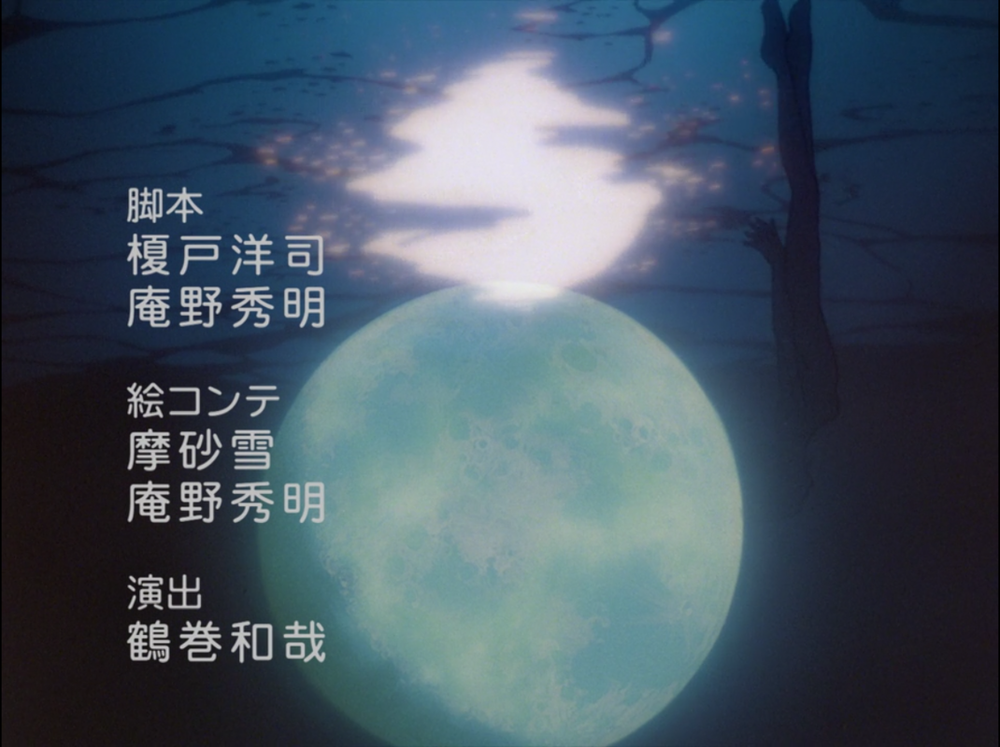

Day 56

Bart Howard - Fly Me To The Moon - 1954
??? - Komm, süßer Tod - 1997
大概多数人知道这首歌都是通过EVA。封面图是EVA的结尾画面。当时听了这首歌和 Komm, süßer Tod 以后去看EVA，结果就只看了两集，明明美术音乐都很喜欢。 Fly Me To The Moon 里的 “In other words, …” 好可爱www
Komm, süßer Tod 翻译成英文就是 Come, Sweet Death，日语的名字是「甘き死よ、来たれ 」，感觉很帅。这首歌歌词消沉，但曲调和歌手的演唱没有什么消极的感觉，像是想要表达“已经感觉不到痛苦的绝望”，令人印象深刻……
Bonus: Patrick on a seahorse listening to fly me to the moon for 1 hour
Fly Me To The Moon
Fly me to the moon
Let me play among the stars
Let me see what spring is like
On a-Jupiter and Mars
In other words: hold my hand
In other words: baby, kiss me
Fill my heart with song
And let me sing for ever more
You are all I long for
All I worship and adore
In other words: please, be true
In other words: I love you
Fill my heart with song
Let me sing for ever more
You are all I long for
All I worship and adore
In other words: please, be true
In other words, in other words: I love you
Komm, süßer Tod
I know, I know I've let you down
I've been a fool to myself
I thought that I could
Live for no one else
But now through all the hurt and pain
Its time for me to respect
The ones you love
Mean more than anything.
So with sadness in my heart
I feel the best thing I could do
Is end it all
And leave forever
Whats done is done, it feels so bad
What once was happy now is sad
I'll never love again
My world is ending
I wish that I could turn back time
'Cause now the guilt is all mine
Can't live without the trust from those you love.
I know we can't forget the past
You can't forget love and pride
Because of that it's killing me inside
It all returns to nothing, it all comes
Tumbling down, tumbling down, tumbling down,
It all returns to nothing, I just keep
Letting me down, letting me down, letting me down,
In my heart of hearts,
I know that I could never love again
I've lost everything
Everything, everything
That matters to me,
Matters in this world
I wish that I could turn back time
'Cause now all the guilt is mine
Can't live without
The trust from those you love
I know we can't forget the past
We can't forget love and pride
Because of that, its killing me inside
It all returns to nothing, it all comes
Tumbling down, tumbling down, tumbling down
It all returns to nothing, I just keep
Letting me down, letting me down, letting me down
It all returns to nothing, it all comes
Tumbling down, tumbling down, tumbling down
It all returns to nothing, I just keep
Letting me down, letting me down, letting me down